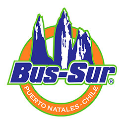
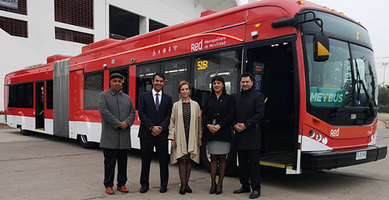

Información Institucional

- Amor por nuestra identidad: Somos una empresa natalina, que entrega un servicio caracterizado por la calidez de una empresa familiar. Nos sentimos orgullosos de pertenecer a esta región y nos preocupamos permanentemente por el bienestar y la satisfacción de nuestros clientes.
- Responsabilidad: Cumplimos con nuestros compromisos acordados en cuanto a fechas, horas, rutas, valores y todas las características de los servicios de transporte de pasajeros y encomiendas.
- Seguridad: Actuamos de manera preventiva en la mantención y renovación de nuestra flota. Somos cautelosos ante las condiciones de la ruta, para reducir los riesgos asociados al transporte de personas.
- Compromiso con nuestros clientes: Nos preocupamos por la fidelización continua de nuestros pasajeros y retribuimos a quienes nos prefieren.
- Excelencia: Estamos en una constante búsqueda de perfeccionamiento de nuestros servicios. Trabajamos arduamente para responder y adaptarnos a las necesidades de carga o transporte.
- Experiencia: Conocemos las principales rutas de la Patagonia chileno-argentina. Transportamos a la gente de Magallanes y alrededores por más de medio siglo. Nos comprometemos por conectar a nuestros visitantes con el turismo regional y sus necesidades especiales.
- Innovación: Buscamos entregar permanentemente un valor agregado en nuestro servicio. Incorporamos y nos actualizamos en tecnologías, además de mantener un liderazgo en gestión web.
BUS-SUR® es una empresa familiar fundada por don Aquilino Silva Obando (1932–2005), un hombre forjador que se radicó en la Región de Magallanes tras emigrar desde la localidad de Loncoche, en la Región de La Araucanía (IX Región de Chile). Desde sus inicios, la empresa ha estado profundamente ligada al desarrollo del transporte en la Patagonia, consolidándose a lo largo de décadas como un actor relevante en la conectividad del extremo sur del país.
Desde 1956 y con más de 70 años de experiencia, BUS-SUR® ofrece principalmente servicios de transporte de pasajeros en las rutas de la Patagonia chileno-argentina, conectando en el territorio nacional ciudades como Punta Arenas, Puerto Natales y Torres del Paine, y a nivel internacional destinos como El Calafate, Río Grande, Ushuaia y Río Gallegos. Además, la empresa presta servicios de carga, encomiendas y correspondencia, así como viajes especiales y traslados turísticos para grupos, instituciones y empresas.
Gracias a alianzas estratégicas con otras compañías, BUS-SUR® amplía su oferta en temporada alta, garantizando recorridos permanentes y servicios complementarios que responden a las diversas necesidades del turismo local y regional, permitiendo a los viajeros vivir la experiencia de conocer la Patagonia.
BUS-SUR® es una empresa familiar, fundada por Don AQUILINO SILVA OBANDO (1932 – 2005), un hombre que llegó a Magallanes proveniente de Loncoche (IX región de Chile) a cumplir con el servicio militar obligatorio. Encantado por estas tierras, por su gente y sus amigos, decidió radicarse en la zona, trabajando con gran persistencia para reunir el capital que le permitió iniciarse en el rubro del transporte; primero adquiriendo camiones y luego buses.

Emprendedor, con una gran convicción logró forjar un destacado desarrollo gracias a su gran sabiduría, en dos rubros muy importantes: el transporte y la ganadería. En sus inicios, comenzó sus actividades trasladando personal de la ganadería y minería de aquellos años, realizando viajes entre Puerto Natales y Río Turbio (República Argentina).
Desde muy temprana edad, su hijo Carlos -actualmente reconocido transportista de la región- worked junto a su padre en esta importante empresa de transporte.

Actualmente, la empresa se encuentra administrada por la nueva generación de la familia: Mariano Silva y Carla Silva, apoyados por alrededor de 100 colaboradores quienes participan día a día en la maravillosa tarea de conectar la Patagonia chileno-argentina.
Somos alrededor de 100 personas, quienes a diario hacemos rodar la empresa. Nos encontramos divididos en diferentes áreas para engranar cada una de las tareas asociadas al servicio de transporte de pasajeros y encomiendas.
Nuestro personal se encuentra especializado y posee experiencia en el rubro del transporte: auxiliares, conductores profesionales, asistentes de ventas, mecánicos, además del personal administrativo y diversos profesionales multidisciplinarios.
📞 Teléfono / WhatsApp: +56 9 96323559
✉️ Correo Electrónico: sac@bussur.com